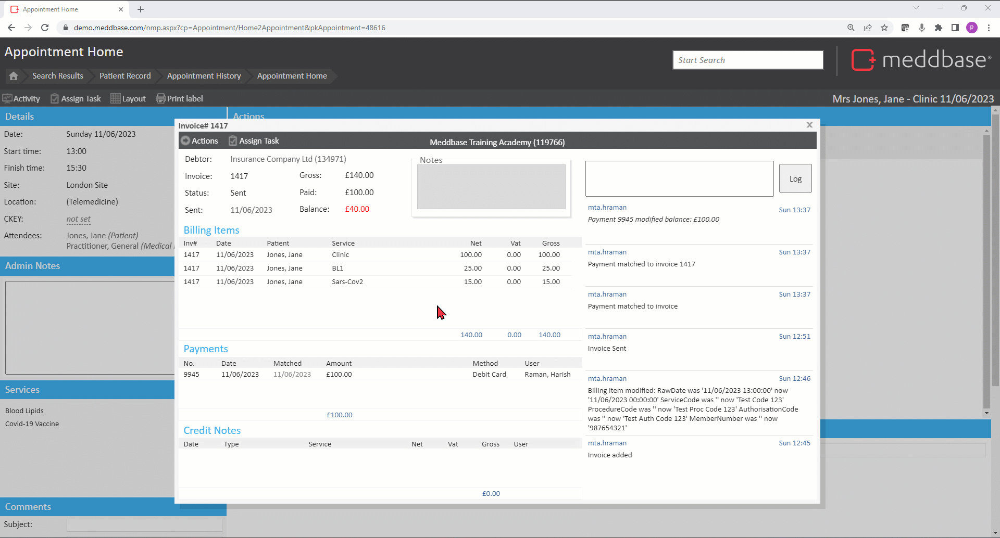
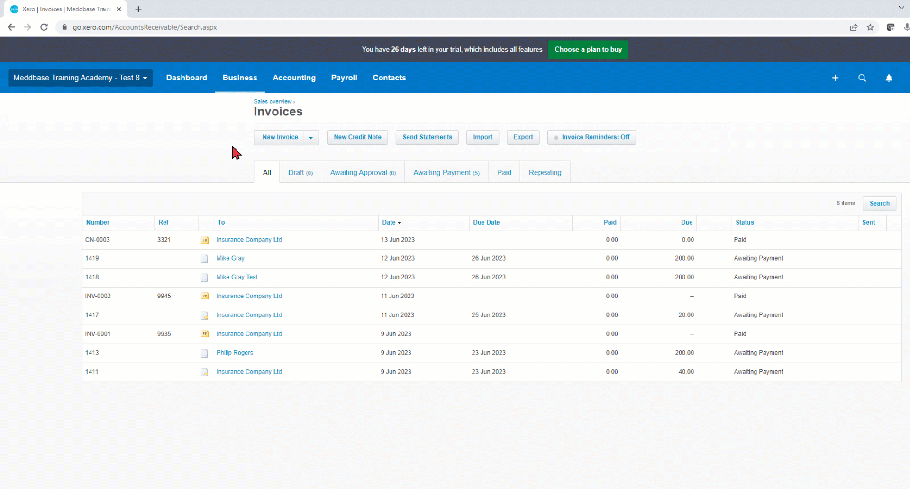
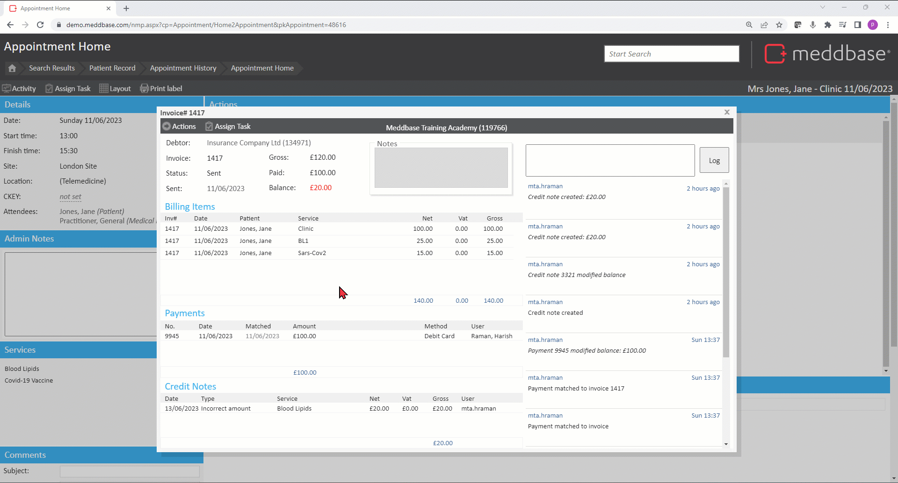
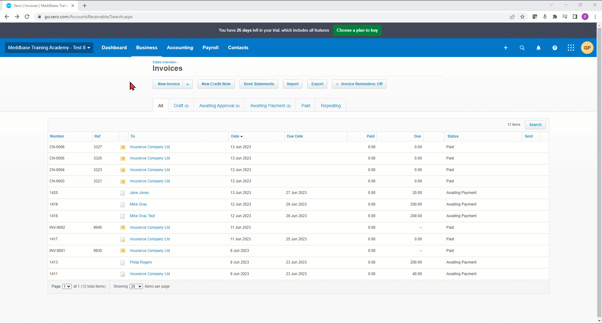

Xero’s online accounting software connects small business owners with their numbers, their bank, and advisors anytime.
This article will walk you through the actions you can take on an invoice in Meddbase and how Meddbase communicates with Xero. The following topics will be covered:
Click here for a full list of the actions you can take on an invoice in Meddbase.
Click here for an article on generating invoice, marking as 'sent', making payment.
Click here for an article on refunding payment.
If you have marked an invoice as sent and made a payment, but later realised that the incorrect amount has been invoiced, or the entire invoice has been incorrectly invoiced, you will need to raise a Credit Note.
To raise a Credit Note:
Upon saving a credit note will see a pop-up warning informing you that once a credit note is saved it can not be deleted or modified later.
9. Click Save again.
In this example, the outstanding balance on the invoice is £40 and we are reducing it by £20 with a credit note.

This Credit Note will now be visible in Xero on the relevant invoice.
Click the Credit Note link to view the details.

You can Shortfall an outstanding balance on an invoice marked as sent. A shortfall is a type of a Credit Note.
To do this:
Meddbase will raise a new invoice for the selected account (patient or company).
The invoice's status will be Not Sent and it will show the outstanding balance accordingly. You can mark the new invoice as sent to push it to Xero and take payment, as per usual.
The previous/original invoice balance will be 0.

The shortfall credit note will now be visible in Xero on the original invoice and it will be split across all the billing items on the invoice.
